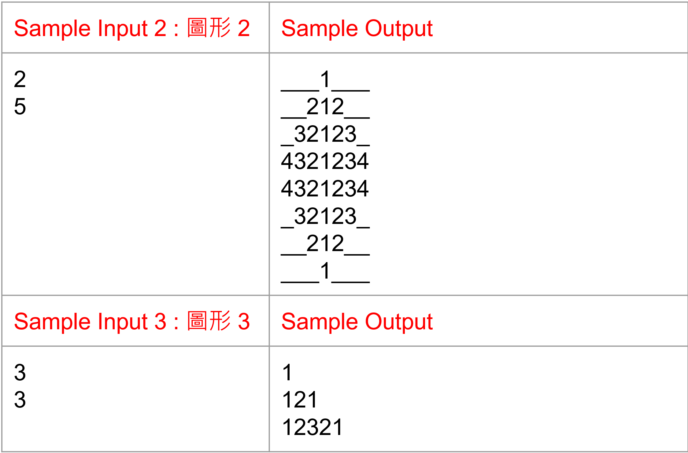

單層迴圈圖形列印 (進階題)
將 Code 寫成至少三個 function,每一個 function 至多使用一層迴圈,輸入圖案編號與參數,輸出各種圖形。
輸入 : 選擇欲輸出的圖形編號(1~3)及參數
輸出 : 輸出預期的圖形
單層迴圈圖形列印 (進階題)

單層迴圈圖形列印 (進階題)

Tips
！！！至少要使用三個 function,每一個 function 至多使用一層迴圈
#include<stdio.h>
void function1( int );
void function2( int );
void function3( int );
.
.
.
int main(void) {
// 輸入圖案編號與參數
// 根據圖案編號跳至對應的function
}
// 利用function和迴圈輸出對應的圖形
void function1( int x )
{
}
void function2( int x )
{
}
void function2( int x )
{
}
.
.
.
函式(Functions)
無回傳值函式
#include <stdio.h>
// 宣告函式
void square( int );
int main()
{
int length = 5;
square( length ); // 傳入square函式的參數是5
return 0;
}
// 定義函式
// void 不需要有回傳值
void square( int length)
{
int ans = 0;
ans = length * length;
printf("正方形面積 = %d\n", ans);
}
正方形面積 = 25
函式(Functions)
有回傳值函式
#include <stdio.h>
// 宣告函式
int square( int );
int main()
{
int length = 5;
int ans;
ans = square( length ); // 傳入square函式的參數是5
printf("正方形面積 = %d\n", ans);
return 0;
}
// 定義函式
// 在函式中的參數名稱不一定要和主程式的變數名稱一樣，可以自由改變
int square( int len)
{
int x = 0;
x = len * len; // 將答案存在x中
return x; //將答案傳回主程式
}
正方形面積 = 25
但這是從函式square跳回主函式時才會印出從函式square得到的答案
不是在執行函式square時印出答案
解答P1
首先我們先引入函式庫與宣告函式
#include <stdio.h>
//宣告函式
void f_1( int ); //畫第一個圖形的函式，這函式需要輸入一個整數參數
void f_11( int );
void f_12( int, int );
void f_2( int ); //畫第二個圖形的函式，這函式需要輸入一個整數參數
void f_21( int, int );
void f_22( int, int );
void f_23( int, int );
void f_3( int ); //畫第三個圖形的函式，這函式需要輸入一個整數參數
void f_31( int );
void f_32( int );
解答P2
再來寫主函式
宣告變數並讓使用者輸入整數與判斷要呼叫哪個函式
需要寫三種函式來印出所需圖形
解答P3
開始使用函式f_1印出第一個圖形
函式預設獲取一整數值，這裡得到剛才傳來的使用者輸入的param值
函式裡面使用迴圈，判斷i跟x的關係來決定進一步呼叫哪個函式
設定每次執行函式都只印出一行圖形
解答P4
使用函式f_11印出前半部圖形
使用函式f_11和f_12印出中間部分圖形
使用函式f_12印出後半部圖形
void f_11( int i) //預設獲取一整數值i，這裡獲取f_1敘述內傳來的值
{
for(int j = 1; j <= i; j++)
printf("%d",j); //印出當前j的值，%d表示讓j的值以十進位方式顯示
}
void f_12( int i, int x) //預設獲取一整數值i跟一整數值x，這裡獲取f_1敘述內傳來的值
{
for(int j = x * 2 - i; j >= 1; j--)
printf("%d",j); //印出當前j的值，%d表示讓j的值以十進位方式顯示
}
解答P5
開始使用函式f_2印出第二個圖形
函式預設獲取一整數值，這裡得到剛才傳來的使用者輸入的param值
函式裡面使用迴圈，第一個迴圈印出前半部圖形，第二個迴圈印出後半部圖形
設定每次執行函式都只印出一行圖形
解答P6
使用函式f_21和f_22印出上半部圖形
使用函式f_23和f_22印出下半部圖形
解答P7
開始使用函式f_3印出第一個圖形
函式預設獲取一整數值，這裡得到剛才傳來的使用者輸入的param值
函式裡面使用迴圈印出圖形
設定每次執行函式都只印出一行圖形
void f_3( int x ) //預設獲取一整數值x，這裡獲取param
{
for(int i = 1; i <= x; i++) //宣告i初始值為1，設定迴圈條件當i小於等於x時繼續執行迴圈，並且每執行完一次敘述i的數值加1
{
f_31( i ); //呼叫函式f_31
f_32( i ); //呼叫函式f_32
if(i != x) //當i的數值不等於x時執行此敘述
printf("\n"); //印出換行
}
}
解答P8
使用函式f_31印出左半部圖形
使用函式f_32印出右半部圖形
程式結束
void f_31( int i ) //預設獲取一整數值i，這裡獲取f_3敘述內傳來的值
{
for(int j = 1; j <= i ; j++)
printf("%d",j); //印出當前j的值，%d表示讓j的值以十進位方式顯示
}
void f_32( int i ) //預設獲取一整數值i，這裡獲取f_3敘述內傳來的值
{
for(int j = i-1; j >= 1 ; j--)
printf("%d",j); //印出當前j的值，%d表示讓j的值以十進位方式顯示
}